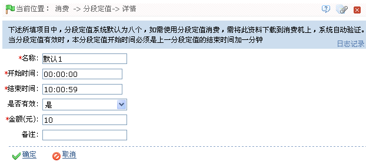

ID--8.2.1 分段定值
进入基本资料页面后的默认窗口即为分段定值设置页面，如上图所示，若不在此默认页面，用户可点击分段定值，进入分段定值设置页面。系统默认具有8个分段定值。分段定值设置成功后，当设备的消费模式为分段定值模式时，人员消费时将按系统中该分段定值设置的金额进行消费。
编辑分段定值：
 提示：操作前请仔细阅读页面中的操作提示。时间的具体选择方法请参见附录1 常用操作的3. 选择时间。
提示：操作前请仔细阅读页面中的操作提示。时间的具体选择方法请参见附录1 常用操作的3. 选择时间。
 注意：分段定值的开始时间必须是上一分段定值的结束时间加一分钟。
注意：分段定值的开始时间必须是上一分段定值的结束时间加一分钟。
1、单击分段定值的“编号”，或直接单击分段定值所在行的“相关操作”下对应的【编辑】按钮，进入分段定值编辑页面。

仔细阅读页面中的操作提示，然后根据需要修改该分段定值的各项参数。（时间的设置，请参见附录1 常用操作中的3. 选择时间）
 注意：当分段定值设置为“有效”时，该分段定值才有效；且分段定值的开始时间必须是上一分段定值的结束时间加一分钟。
注意：当分段定值设置为“有效”时，该分段定值才有效；且分段定值的开始时间必须是上一分段定值的结束时间加一分钟。
2、设置完成后，单击【确定】按钮保存，并返回分段定值页面；此时分段定值资料列表中将显示修改后的分段定值资料。